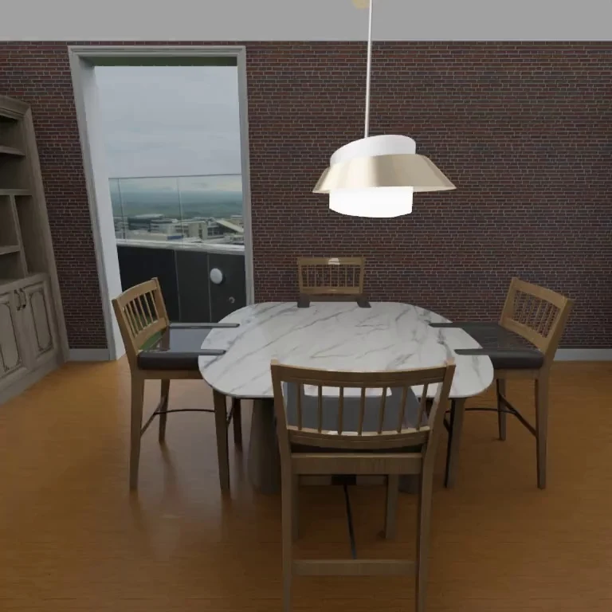

“Have I seen this before?”
When the observation history exceeds the context budget, useful spatial evidence must remain accessible through structured memory and on-demand retrieval.
MemAct: Streaming Spatial Understanding
with Memory and Active Exploration
A video stream does not guarantee the evidence an agent needs.
MemAct learns to retrieve what it has seen and explore what it hasn’t.
* Corresponding authors

CURRENT OBSERVATION 00:00Move through the frames to see how observations become retrievable records.
Showing dining objects from a dataset memory-write example.
Spatial understanding is essential for embodied agents navigating and interacting with the physical world. As observations arrive incrementally, agents must reason in a streaming manner. Yet streaming understanding must also be closed-loop: task-relevant evidence may require both recalling past observations and actively acquiring new views. Existing streaming approaches largely emphasize processing incoming observations, leaving task-driven active exploration underexplored.
We introduce MemAct, a framework for streaming spatial understanding with memory and action. A shared vision–language model incrementally writes structured historical memory, retrieves records and past frames on demand, and acquires additional evidence through movement and turning. Retrieved evidence and action observations inform subsequent decisions, enabling the agent to continue exploring or answer within a unified reasoning loop.
We develop the StreaMemAct suite, a data generation pipeline and collection across real and simulated environments, with approximately 1M training examples for spatial reasoning, memory writing, retrieval, and exploration. Its StreaMemAct-bench comprises 20,000 main QA pairs evaluating current-observation understanding, historical evidence use, and active exploration, plus 2,000 separate Timing questions. MemAct combines supervised fine-tuning for memory and interaction with counterfactual action optimization using cumulative evidence gains, action costs, and terminal answer quality to improve exploration and stopping decisions. Experiments show that MemAct outperforms existing spatial understanding and streaming baselines and approaches frontier multimodal models on StreaMemAct-bench while retaining streaming inference efficiency.
The evidence may already be gone.
Or it may never have been observed.
Embodied agents see the world incrementally. A relevant object can disappear from the current context; a limited viewpoint can hide the evidence needed to answer. Passive observation alone does not resolve either problem.
When the observation history exceeds the context budget, useful spatial evidence must remain accessible through structured memory and on-demand retrieval.
When the current view and memory are insufficient, the agent must choose an informative move or turn—and decide when it has enough evidence to answer.
Make streaming spatial understanding closed-loop:
use understanding to choose the next observation,
then use that observation to reason further.
MemAct unifies incremental observation, historical evidence retrieval, new-view acquisition, and answering in a shared vision–language model.
Explore the method ↗StreaMemAct combines 1M training QA turns with memory-writing, retrieval, and single- and multi-step exploration supervision from real and simulated environments.
Explore the dataset ↗SFT teaches the interaction protocol. Cumulative-return counterfactual optimization credits preparatory actions with downstream evidence and answer quality, while learning when to stop.
Explore the ablations ↗StreaMemAct-bench contains 20K main QA turns and 2K separate Timing questions, spanning current understanding, historical reasoning, active observation, and timely answering.
Explore the experiments ↗Explore spatial QA in real and simulated scenes,
historical memory, and active observation.
Real-world observations, simulated scenes, memory retrieval, and camera actions in one film.
Task demonstrations with reference answers and annotated evidence.
One model chooses how to use the evidence:
answer, retrieve memory, or acquire a new view.
Train on complete streams of observations, memory writes, retrieval calls, camera actions, and answers. Every decision uses only the evidence available at that point.
Compare actions from the same history using cumulative evidence gains, action costs, and final answer quality. A preparatory move can earn credit for a useful later view.
Real observations and controllable simulation.
Supervision for perception, memory, and exploration.
1,000,000 training answer turns, with memory writes and retrieval events supervised separately. The tables below describe the data composition reported in the paper.
| Source | Current | Memory | Action |
|---|---|---|---|
| 3D-FRONT | 135,671 | 218,983 | 294,677 |
| ScanNet | 31,304 | 30,431 | 0 |
| ScanNet++ | 19,160 | 29,201 | 0 |
| ARKitScenes | 116,526 | 124,047 | 0 |
| Source | Layouts / recordings | Episodes / segments |
|---|---|---|
| 3D-FRONT | 4,823 | 14,534 |
| ScanNet | 1,412 | 1,511 |
| ScanNet++ | 796 | 1,457 |
| ARKitScenes | 4,681 | 5,764 |
| Real-world total | 6,889 | 8,732 |
| Actions | Training QA turns |
|---|---|
| 1 | 216,418 |
| 2 | 46,858 |
| 3 | 31,401 |
3D-FRONT episodes above cover Current and Memory QA: 14,534 episodes from 4,823 layouts. The Action subset adds 12 layouts, for 4,835 simulated layouts in total. Long real recordings are split into 8,732 retained segments. A recording is counted if at least one segment is retained; recordings, episodes, and serialized training streams are distinct units.
| Template | Training QA turns |
|---|---|
| approached object category | 18,733 |
| became visible category | 18,733 |
| camera motion bucket | 18,733 |
| camera path length m | 18,733 |
| camera rotation deg | 18,733 |
| camera to object distance bucket | 18,733 |
| camera to object distance m | 18,733 |
| closer than before | 18,733 |
| closest category then distance | 18,732 |
| closest category then relation | 18,732 |
| closest neighbor category | 18,739 |
| closest object category | 18,732 |
| disappeared category | 18,732 |
| fixed reference relation | 1,618 |
| multi candidate height | 1,316 |
| object category then later visibility | 18,732 |
| object relative to camera | 18,732 |
| room floor area | 18,732 |
| Template | Training QA turns |
|---|---|
| first appearance order | 61,034 |
| first seen category then timestamp | 36,870 |
| first seen object category | 18,435 |
| first seen timestamp s | 18,435 |
| historical coappearance category | 60,843 |
| historical relative direction | 26,743 |
| last seen timestamp | 60,847 |
| seen count by category | 24,399 |
| single seen object then closest category | 47,528 |
| single seen object then closest distance | 47,528 |
| Template | Training QA turns |
|---|---|
| object size m | 128,469 |
| object to object distance bucket | 70,293 |
| object to object distance m | 95,915 |
Evaluation across current understanding,
historical reasoning, and active exploration.
| Model / baseline | Current ACC / MRA | Memory ACC / MRA | Action ACC / MRA | Overall ACC / MRA | Timing T / JA / JM | Latency s / QA |
|---|
StreaMemAct-bench: 20,000 main QA turns. ACC measures multiple-choice accuracy; MRA averages numerical accuracy across relative-error thresholds from 5% to 50%. Overall scores pool the applicable questions. Action questions are simulated only; the 2,000 Timing questions are evaluated separately.
Additional camera actions improve Action QA accuracy, from 47.45% without actions to 58.28% with a budget of three attempts.
Full memory improves Memory QA accuracy by 13.59 points over no explicit memory. Historical images, retained history, and write frequency each affect the available evidence.
| Setting | ACC (%) | MRA (%) |
|---|---|---|
| No explicit memory | 54.52 | 52.24 |
| Full memory | 68.11 | 67.72 |
| GT memory | 70.77 | 71.06 |
| w/o Frames | 64.92 | 63.72 |
| w/o Count | 68.10 | 66.62 |
| w/o Relations | 67.91 | 67.72 |
| Setting | ACC (%) | MRA (%) |
|---|---|---|
| 10 s | 58.52 | 57.45 |
| 20 s | 60.91 | 60.12 |
| 30 s | 63.20 | 62.48 |
| 40 s | 65.04 | 64.47 |
| 50 s | 66.50 | 65.95 |
| Full history | 68.11 | 67.72 |
| Setting | ACC (%) | MRA (%) |
|---|---|---|
| 1 s | 67.47 | 66.98 |
| 2 s | 67.82 | 67.34 |
| 3 s | 68.13 | 67.72 |
| 5 s | 68.11 | 67.72 |
| 10 s | 66.60 | 65.83 |
All entries use MemAct-9B. GT memory uses ground-truth memory as an upper-reference condition. The default configuration retains full history and writes every 5 seconds; w/o Count is 68.10 ACC, distinct from the 68.11 full-memory result.
Cumulative-return optimization improves Action QA by 5.36 ACC points and 6.87 MRA points over SFT alone, while reducing mean attempts from 2.19 to 2.02.
| Setting | ACC (%) and delta pp | MRA (%) and delta pp | Evidence gain (points) | Effective gain rate (%) | Mean steps |
|---|---|---|---|---|---|
| No action | 47.45 (+0.00) | 35.27 (+0.00) | 0.00 | 0.00 | 0.00 |
| SFT only | 52.92 (+5.47) | 41.87 (+6.60) | 14.26 | 43.41 | 2.19 |
| SFT + Bandit (full) | 58.28 (+10.83) | 48.74 (+13.47) | 29.13 | 71.14 | 2.02 |
| SFT + GRPO | 57.92 (+10.47) | 48.20 (+12.93) | 28.34 | 69.78 | 2.08 |
| Setting | ACC (%) and delta pp | MRA (%) and delta pp | Evidence gain (points) | Effective gain rate (%) | Mean steps |
|---|---|---|---|---|---|
| Pixel visibility | 51.39 (+3.94) | 39.63 (+4.36) | 10.40 | 35.13 | 2.31 |
| + Full framing | 52.55 (+5.10) | 43.11 (+7.84) | 17.79 | 50.90 | 2.20 |
| + Two-target evidence | 55.81 (+8.36) | 45.03 (+9.76) | 21.69 | 58.07 | 2.14 |
| + Historical gain (full) | 58.28 (+10.83) | 48.74 (+13.47) | 29.13 | 71.14 | 2.02 |
| Setting | ACC (%) and delta pp | MRA (%) and delta pp | Evidence gain (points) | Effective gain rate (%) | Mean steps |
|---|---|---|---|---|---|
| No action (0 steps) | 47.45 (+0.00) | 35.27 (+0.00) | 0.00 | 0.00 | 0.00 |
| At most 1 step | 54.61 (+7.16) | 43.26 (+7.99) | 17.85 | 50.85 | 0.94 |
| At most 2 steps | 56.93 (+9.48) | 46.73 (+11.46) | 25.45 | 64.84 | 1.57 |
| At most 3 steps (full) | 58.28 (+10.83) | 48.74 (+13.47) | 29.13 | 71.14 | 2.02 |
Parentheses show changes relative to no action. Evidence gain measures improvement in the best historical joint-evidence score; effective gain rate is the percentage of questions whose gain exceeds 0.10. Mean steps includes invalid action attempts. Action QA contains 1,245 simulated questions: 336 multiple-choice and 909 numerical.
MemAct retains competitive performance on four established spatial benchmarks while operating as a streaming model.
| Model | VSI-Bench | ReVSI | MMSI-Bench | ViewSpatial |
|---|---|---|---|---|
| GPT-5.2 | 54.49 | 50.90 | 41.30 | 47.30 |
| Gemini-3-Pro | 55.10 | 60.90 | 45.20 | 50.40 |
| Qwen3.5-9B | 57.90 | 51.60 | 36.50 | 48.20 |
| VLM-3R-7B | 60.90 | 50.10 | 27.90 | 40.50 |
| Cambrian-S-7B | 67.50 | 49.10 | 27.10 | 41.30 |
| MemAct | 65.90 | 55.30 | 37.80 | 52.21 |
Comparison models use the published results and evaluation settings cited in the paper. These benchmark scores do not all share an identical frame or input protocol.
Causal observations are shared across decisions.
Private geometry supplies supervision,
never the model’s answers at inference.
One record per sampled frame: category counts, frame references, and optional image-plane relations.
Up to four memory requests and three camera-action attempts per question.
At most two images per retrieval call and four distinct historical images per question.
At observation time, the model writes structured records over successive five-second windows. Counts describe each frame, not a sum of distinct objects across time. Relations describe left, right, above, or below in the image, with endpoints localized on a 3 × 3 grid.
A deterministic router validates the schema, time order, and observed-frame references, then stores and indexes the records. It preserves the model’s semantic predictions; it does not correct them using ground-truth annotations.
Retrieval matches categories by union, marks co-visible records, and paginates at eight records. Already returned images remain in context and are not sent again. New questions reset retrieval pagination and image budgets.
{"type": "use_memory",
"categories": ["chair", "table"],
"time_range": [0, 5],
"with_frames": true}The half-open time interval selects observations from 0 seconds up to, but not including, 5 seconds. The router appends matching records, relations, and budgeted images to the current question context.
The model then decides whether to answer, retrieve again, or acquire another view. Memory-dependent questions can be answered directly when retained context already contains the evidence.
Translations preserve orientation; rotations preserve position. Every command starts from the state reached by the preceding command. The scene and bound question referents remain fixed, so size and object-to-object distance answers do not change during exploration.
Invalid actions leave the view unchanged and consume an attempt. The model may answer at any point; exhausting the three-attempt budget requests a final answer. Action observations stay in the current question context and are not automatically written into external memory. The passive stream resumes after exploration.
SFT uses StreaMemAct together with VSI-590K. Assistant memory writes, retrieval calls, camera commands, and answers contribute to the token loss. Observations, prompts, and tool outputs provide context but are loss-masked.
At each decision history, the five camera commands and answer_now are evaluated from independent copies of the same state and remaining budget. Four continuations per candidate estimate its cumulative value. Later camera decisions are sampled from a frozen policy snapshot; terminal answers use greedy decoding.
Initial and intermediate histories are trained. No additional memory retrieval is introduced inside these action rollouts. Unchosen outcomes and private evidence scores are excluded from the model’s decision context.
Framing penalizes image-boundary clipping. Joint evidence requires support for both objects in a relational question. The historical maximum prevents repeated rewards for recovering a view already observed.
Answer reward is option correctness or numerical MRA. With discount 1, a preparatory step can earn credit for a useful later view. The policy objective uses candidate values plus a 0.05 KL penalty to the frozen SFT policy.
| Component | Configuration |
|---|---|
| Base models | Qwen3.5-4B and Qwen3.5-9B |
| Adaptation | LoRA on query/value projections; rank 8, scaling 16, dropout 0; base model and visual encoder frozen |
| Optimizer | AdamW; learning rate 10⁻⁵; gradient clipping 1.0 |
| Effective batch | 8 GPUs × 1 item per microbatch × 8 accumulation steps = 64 items |
| Sequence budget | 180,000 tokens, including visual tokens and assistant outputs |
| Action optimization | 4 continuations per candidate; discount 1; up to 3 action attempts |
| Supervised replay | 50% action decision items, 25% QA replay, 25% memory-writing replay |
| Policy snapshots | Rollout snapshot refreshed before each update; SFT reference frozen |
SFT items are serialized sequences; action items are decision histories with internally evaluated candidate rollouts. Replay sampling probabilities are not applied a second time as loss multipliers.
All 18 qualitative examples from the paper:
current views, historical memory, camera actions,
and incremental memory writes.
Showing 6 Current QA examples. Select a page to enlarge it.
Representative questions, semantic answers,
and annotation-based construction rules.
Linked questions retain the original referent.
Reference answer: storage unit.
Construction: Compare objects visible at both endpoints. Require a distance decrease of at least 0.20 m and a 0.10 m lead over the runner-up.
Reference answer: plant.
Construction: Take the difference between endpoint category sets and require one newly visible category.
Reference answer: almost stationary (at most 0.2 meters).
Construction: Discretize straight-line camera endpoint displacement, excluding ambiguous interval boundaries.
Reference answer: 0.0.
Construction: Sum Euclidean translations between consecutive camera positions in the specified window.
Reference answer: 120.0.
Construction: Compute net rotation between endpoint camera orientations, expressed in degrees.
Reference answer: very near (at most 1.25 meters).
Construction: Bind the nearest visible instance of the named category and discretize its center distance to the camera.
Reference answer: 1.06.
Construction: Bind the nearest visible instance of the named category and compute its center distance to the camera.
Reference answer: much closer (decrease of at least 0.75 meters).
Construction: Uniquely match the category referent across the two observations and classify its camera-distance change.
Reference answer: sofa.
Construction: First identify the nearest visible category; then query the distance interval of the same object. Count both QA turns.
Reference answer: sofa.
Construction: First bind the nearest visible object; then identify its nearest neighbor among currently co-visible objects.
Reference answer: bed.
Construction: Require visibility at the question frame and its adjacent frames for offline stability selection, and unique category referents; the nearest two candidates must differ by at least 0.40 m.
Reference answer: sofa.
Construction: Rank currently visible objects by camera-to-center distance; require a nearest-candidate margin of 0.15 m.
Reference answer: sofa.
Construction: Take the reverse endpoint category-set difference and require one disappeared category.
Reference answer: double bed.
Construction: Use projected image positions with unique referents; select a same-row left/right relation and place distractors on the opposite side.
Reference answer: wardrobe.
Construction: Compare world-vertical bounding-box extents of four distinct-category candidates; require a 0.30 m gap between the tallest two.
Reference answer: media unit.
Construction: Bind a category/object in the first turn and ask about its visibility only after the later observation arrives.
Reference answer: far to the right.
Construction: Transform the bound object center into the current camera frame and assign the corresponding direction category.
Reference answer: 8.43.
Construction: Compute the valid room floor-polygon area. Require at least eight frames, 90 percent boundary-angular coverage, and a 150-degree heading span.
Reference answer: storage unit → dining table → armchair.
Construction: Sort three category-first-observation times, separated by at least two seconds and preceding the current window.
Reference answer: lighting.
Construction: Identify the earliest category among the options, then query its original first-observation timestamp.
Reference answer: lighting.
Construction: Compare first-observation times of the listed categories; require a unique earliest option before the current window.
Reference answer: 0.0.
Construction: Return the earliest observed timestamp for the category over the complete causal prefix.
Reference answer: cabinet.
Construction: Use the explicitly referenced historical frame; the correct category is co-visible with the anchor and distractors are absent.
Reference answer: left.
Construction: Use uniquely bound objects in the historical frame and their same-row or same-column image-plane relationship.
Reference answer: 44.0.
Construction: Take the last occurrence before the question; require current absence and an occurrence preceding the pending write window.
Reference answer: 4.
Construction: Union visible instance IDs over the prefix; require historical write coverage and that the current view does not contain all counted instances.
Reference answer: table.
Construction: Bind the only previously observed instance of the target category, absent now; find its nearest co-visible historical neighbor.
Reference answer: 0.776.
Construction: Use the same historical target binding and return its minimum center distance to another object visible in the referenced frame.
Reference answer: 1.185.
Construction: Use source physical dimensions or transformed mesh bounding-box dimensions to obtain the longest physical side in meters; hold the bound object fixed across views.
Reference answer: near (1 to 1.75 meters).
Construction: Map the bound pair's center distance to an unambiguous interval; require evidence for both objects.
Reference answer: 3.041.
Construction: Compute the Euclidean distance between the bound 3D centers; retain the same pair throughout the action path.
MRA averages correctness at ten relative-error thresholds: 5%, 10%, …, 50%. A zero-valued reference requires an exact zero prediction. ACC and MRA are reported as percentages and aggregated by the number of applicable questions.
Models receive up to 32 uniformly sampled frames from the available prefix, in chronological order with timestamps. Shorter prefixes use every frame. Prompts include labeled choices or the required numerical unit.
{"type":"answer","answer":"A"}
{"type":"answer","answer":1.2}Multiple-choice answers use a single uppercase option letter. Numerical answers are JSON numbers in the question’s stated unit; object counts are integers. Linked questions include preceding questions and the model’s own predictions.
Timing questions arrive before their evidence. At 1 FPS, the model chooses wait or answer at each checkpoint. The first answer is final; memory and action tools are disabled for this separate evaluation.
The on-time interval runs from the first evidence-supported answer time through five seconds afterward, including both endpoints. It uses video time rather than inference latency.
Timing’s 2,000 questions are separate from the 20,000 main QA turns.
Structured memory and active views make the observation stream useful for reasoning—and reasoning useful for choosing the next observation.
The present action setting uses discrete camera commands in simulated environments. Evidence criteria provide measurable support for supervision; visibility alone is not a guarantee that an RGB-only model can answer every question.
Future work extends the action vocabulary toward more continuous and comprehensive control, and adapts MemAct to larger, more cluttered, and more dynamic scenes.